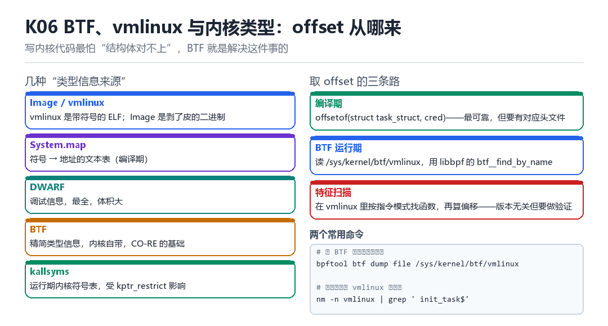

BTF、vmlinux 与内核类型
Image/vmlinux、DWARF、BTF、CO-RE、offset
写内核代码最怕结构体对不上；BTF 就是解决这件事的。

6.1 五种类型信息来源
| 来源 | 内容 | 优缺点 |
|---|---|---|
| vmlinux | 带符号的 ELF | 最全，体积大 |
| Image | 剥了符号的二进制 | 只能靠特征扫描 |
| System.map | 符号 → 地址 | 编译期，需版本匹配 |
| DWARF | 完整调试信息 | 最详细，最大 |
| BTF | 精简类型信息 | 内核自带，CO-RE 基础 |
6.2 取 offset 的三条路
- 编译期：
offsetof(struct task_struct, cred)。最可靠，但需要对应版本的头文件。 - BTF 运行期：读
/sys/kernel/btf/vmlinux，按名字查字段偏移。版本无关。 - 特征扫描：在 vmlinux 里按指令模式定位函数，再反推偏移。通用但必须做验证。
bpftool btf dump file /sys/kernel/btf/vmlinux | grep -A20 'task_struct'
nm -n vmlinux | grep -E ' (init_task|commit_creds)$'6.3 本章自测
- BTF 与 DWARF 的区别是什么？
- 为什么 CO-RE 依赖 BTF？
- 三条取 offset 的路各自的风险是什么？
- 如果目标内核没有 BTF，你会怎么办？
6.4 深入：BTF 里到底有什么
BTF 把类型信息压缩成一种紧凑的格式，包含：结构体/联合体的成员与偏移、枚举值、函数原型、以及 BTF_KIND_FUNC / BTF_KIND_VAR 等类型。它不含源码行号（那是 DWARF 的活），因此体积小得多。
| BTF 类型 | 内容 | 用途 |
|---|---|---|
| STRUCT/UNION | 成员名与 bit 偏移 | 取 offset |
| ENUM | 枚举值与名字 | 符号映射 |
| FUNC | 函数原型 | 类型校验 |
| VAR | 全局变量 | 定位符号 |
| TYPEDEF | 别名 | 可读性 |
6.5 实战：用 bpftool 查一个字段偏移
bpftool btf dump file /sys/kernel/btf/vmlinux format c \
| grep -A200 'struct task_struct {' | grep -n 'cred'
# 或用 raw 格式看得更清楚：
bpftool btf dump file /sys/kernel/btf/vmlinux | less6.6 原理推演：CO-RE 到底“一次编译”了什么
CO-RE 的核心思想是：编译时记录“相对偏移的表达式”，运行时用 BTF 把表达式求值成实际偏移。所以同一个二进制在不同内核上都能跑——因为它不写死偏移，而是“现场算”。
| 阶段 | 产物 | 依赖 |
|---|---|---|
| 编译 | 带重定位的类型访问 | BTF（编译时） |
| 加载 | libbpf 解析重定位 | BTF（运行时） |
| 执行 | 直接内存访问 | 无 |
这也是为什么“没有 BTF 的老内核”用不了 CO-RE：缺了运行时的类型信息，表达式就没法求值。
6.7 数据细节：一个 BTF 类型条目的结构
struct btf_type {
__u32 name_off; // 名字在字符串表里的偏移
__u32 info; // kind + vlen
union { __u32 size; __u32 type; };
};
// STRUCT 后面跟 vlen 个 btf_member
struct btf_member {
__u32 name_off; __u32 type; __u32 offset;
};6.8 深入：为什么 BTF 比 DWARF 小这么多
因为 BTF 只保留“类型结构”，不保留“源码位置、变量名作用域、宏展开”等调试信息。对于“取 offset”这个需求，那些信息完全是冗余的。
| 信息 | DWARF | BTF |
|---|---|---|
| 结构体成员偏移 | 有 | 有 |
| 行号映射 | 有 | 无 |
| 宏定义 | 有 | 无 |
| 体积（vmlinux） | 数百 MB | 几 MB |
所以“用 BTF 取 offset”是标准做法；只有需要“源码级调试”时才用 DWARF。
6.9 深入：没有 BTF 时的三条退路
- 用 System.map + 硬编码偏移：版本一变就失效。
- 用特征扫描：在 vmlinux 里找指令模式，反推结构。工作量中等。
- 用运行时探测：写一小段代码，试探性地读某个偏移，看是否得到合理值。
// 已知 cred 指针指向的结构里，uid 应该在某个范围内
// 试探几个候选偏移，选“读出来像 uid”的那个6.10 实战：验证 offset 是否正确的三种方法
| 方法 | 可靠性 | 成本 |
|---|---|---|
| 与 BTF 对比 | 高 | 低 |
| 读出来的值是否合理 | 中 | 低 |
| 改值看行为是否变化 | 高 | 中 |
换一颗内核，一行偏移打崩整个模块
同一份内核模块，在 5.10 的设备上跑得好好的，换到 5.15 一加载就把进程打崩。差异只有一行：task_struct 里插了一个新字段，cred 的偏移往后挪了 8 字节。你的代码还在按老偏移读，读出来的是一个指向别处的指针。写内核代码最贵的一课，不是算法，是结构体对不上。
BTF 就是给这件事兜底的：内核把自己身上每个结构体的名字、成员名、成员偏移，压缩成一张类型表，随运行内核一起挂在 /sys/kernel/btf/vmlinux。它不是外部文件，不会版本错配——因为它就是这颗内核编译时自己生成的那一份。
从 DWARF 到 CO-RE，一张类型表的五拍
- `pahole` 对 带 DWARF 的 vmlinux 做去重与裁剪：丢掉局部变量、行号、宏，只保留结构体、联合体、枚举、typedef 与函数原型的类型图 → 结果：几十 MB 的调试信息压成几 MB 的
.BTFELF section。 - 链接与启动 对 `/sys/kernel/btf/vmlinux` 暴露这张表：内核把 BTF 数据挂成只读的二进制属性 → 结果：用户态按字节读就能拿到当前内核的类型图，与 KASLR 的 slide 完全无关。
- `bpftool btf dump ... format c` 对 类型表 反向生成头文件：产出只含类型定义、不含任何宏的
vmlinux.h→ 结果：编译 CO-RE 程序时不必再去找对应版本的内核头文件。 - libbpf 的 CO-RE 重定位 对 字段访问 改写法：代码里写
task->cred，加载器查 BTF 拿到这个成员在结构体里的偏移，再填进实际指令 → 结果：换内核版本时不用重编译，只重算一次重定位。 - 运行期兜底 对 失败路径 降级：目标内核没 BTF 就退回编译期
offsetof或特征扫描，并把探测结果写进日志 → 结果：工具不至于直接崩，而是明确报出缺哪份类型信息。
第 1 拍要划清界限：BTF 不含函数局部变量、行号、宏和常量值。它能回答 cred 在偏移多少、是什么类型，回答不了这个常量是多少或这行源码在哪。要那些得回到 DWARF 与 vmlinux；要常量，通常还得靠 K07 的符号与特征扫描。把 BTF 当成万能调试信息，是第二个常见误会。
取一个字段偏移的三条路和一个锚点
- 编译期 `offsetof` 对 对应版本头文件 求值：编译时就把偏移烘进指令 → 结果：最快最准，但换一颗内核就全错，必须一版一编。
- BTF 运行期 对 类型表 按名字查询：拿到
BTF_KIND_STRUCT，遍历btf_member读offset→ 结果：版本无关；注意位域成员的 offset 高位还打包了位偏移，得先拆再用。 - 符号锚点 对 `init_task` 取地址：
/proc/kallsyms或nm -n vmlinux拿到静态链接地址，再叠加 K07 的 slide → 结果：在没有 BTF 的内核里也能读出实际字段值，反推布局。 - 特征扫描 对 剥了符号的 Image 找指令模式：定位
commit_creds之类的调用点，从立即数反推访问偏移 → 结果：最通用，但必须用上一步的结果做交叉验证，否则会把相似指令认错。 - 三层探测 对 工具启动流程 收口：先探测 BTF 是否存在，再探测关键符号，最后决定走哪条路并写日志 → 结果：任何一层失败都能优雅降级，而不是拿一个野指针去解引用。
| 信息源 | 能回答什么 | 回答不了什么 | 随内核版本变吗 |
|---|---|---|---|
| /sys/kernel/btf/vmlinux | 结构体成员名、类型、偏移、函数原型 | 局部变量、行号、宏、常量值 | 随运行内核生成，天然自洽 |
| vmlinux（带符号 ELF） | 全部符号地址与 DWARF 完整调试信息 | 当前运行内核的 slide | 必须版本精确匹配 |
| System.map | 符号到静态链接地址 | 结构体布局 | 一版一份，错版即错 |
| DWARF | 变量、行号、内联、调用帧 | 轻量（体积太大，一般不带上机） | 与 vmlinux 同版 |
| Image（剥离符号） | 指令字节序列 | 任何名字与类型 | 只能靠特征扫描 |
| 运行期 /proc/kallsyms | 当前符号的运行地址 | 字段偏移，因为不含类型信息 | 每次开机随 slide 变 |
从内核身上直接把偏移读出来
# 1. 先确认这颗内核有没有 BTF
ls -l /sys/kernel/btf/vmlinux && cat /proc/sys/kernel/kptr_restrict
# 成功：文件存在且非空 => 走 BTF 路线；失败：文件不存在 => 跳到第 4 步
# 2. 按名字查结构体，肉眼看成员与偏移
bpftool btf dump file /sys/kernel/btf/vmlinux format raw | grep -A40 task_struct | head -45
# 成功：看到 STRUCT task_struct 后跟一串 member，每行带 type_id 与 offset
# 失败：command not found => 换工具路径，或改用 pahole -C task_struct vmlinux
# 3. 生成一份与当前内核完全对齐的头文件
bpftool btf dump file /sys/kernel/btf/vmlinux format c > /data/local/tmp/vmlinux.h
grep -n 'cred;' /data/local/tmp/vmlinux.h | head -5
# 成功：头文件里成员顺序与运行内核一致，用它编译不再需要内核源码树
# 4. 没有 BTF 时的退路：看 ELF section 与符号
readelf -S vmlinux | grep -i -E 'btf|debug_info'
nm -n vmlinux | grep -E ' (init_task|commit_creds)$'
# 成功：拿到静态链接地址；与 /proc/kallsyms 的运行地址相减即得 slide（见 K07）
# 失败：nm 报 no symbols => 拿到的是 Image，只能做特征扫描第 3 步生成的 vmlinux.h 值得单独说一句：它没有 #include、没有宏、没有任何配置开关，因此不同内核生成的头文件不能混用，但同一颗内核上它可以完全替代几十个内核头文件。判断它有没有用对，最省事的办法是拿它里面的 cred 位置，和 init_task 里读出来的实际值对一次。
把这条结论带走：跨版本能不能活，取决于你的偏移是算出来的还是抄来的。第四部 M01 讲 KPM 装载与生命周期时，第一层能力探测就是查这颗内核有没有 BTF、有哪些符号；M03 做 ARM64 指令 Hook 要改 cred 之前，也得先按这里的方法确认字段位置；第五部 L08 处理 Android 14/16 分层适配、L09 做结构差分检测，用的是同一套按名字查、按版本降级的思路。下一讲 K07 会把这张类型表接上真实运行地址。